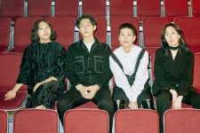

- 1집
- 2집
- 3집

멤버
- 덕원(보컬, 베이스), 잔디(키보드), 류지(보컬, 드럼), 향기(기타)
앨범
- 보편적인 노래
- 졸업
- 잔인한 사월
- 골든-힛트 모음집[앵콜요청금지]
- 숨박꼭질
- 1/10
- 앵콜요청금지
- 천천히
- 잊어야 할 일은 잊어요
- 공업탑
- 단호한 출근
- 살얼음
- 분향
- 속물들
- B-SIDE PART 1
- B-SIDE PART 2
수상내역
- 2011 제8회 한국대중음악상 최우수 모던록 노래 부문
- 2010 제7회 한국대중음악상 최우수 모던록 노래 부문
관련사이트1
관련사이트2